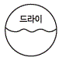
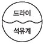
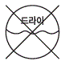
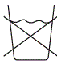

세탁기능사 (2011-07-31 기출문제)
1과목: 세정이론
1. 흡착제와 용제의 접촉이 길어 청정능력이 높아 가장 많이 사용되는 세정액의 청정장치는?
- 카트리지식
- 청정통식
- 증류식
- 필터식
(정답률: 75%)

2. 다음 중 드라이클리닝 용제 선택의 조건이 아닌 것은?
- 오염물질을 용해 분산하는 능력이 커야 한다.
- 건조가 쉽고 세탁 후 냄새가 없어야 한다.
- 인화성이 있거나 독성이 강해야 한다.
- 회수, 정제가 용이해야 한다.
(정답률: 79%)
3. 직물에 영구적인 가공효과를 부여하여 방충효과를 나타내는 가공제는?
- 아레스린
- 장뇌
- 파라클로로벤젠
- 나프탈렌
(정답률: 68%)
4. 드럼식 세탁기에 가장 적합한 세제는?
- 저포성 세제
- 합성 세제
- 농축 세제
- 약알칼리성 세제
(정답률: 83%)
5. 석유계 용제의 장점 중 틀린 것은?
- 기계부식에 안전하다.
- 독성이 약하고 값이 싸다.
- 약하고 섬세한 의류에 적당하다.
- 세정시간이 짧다.
(정답률: 86%)
6. 청정제 종류와 뛰어난 성질과의 관계가 틀린 것은?
- 활성탄소 - 탈취
- 실리카겔 - 탈산
- 알루미나겔 - 탈취
- 산성백도 - 탈색
(정답률: 64%)
7. 세정액의 청정장치 중 여과지와 흡착제가 별도로 되어 있고 여과 면적이 넓고 흡착제의 양이 많아 오래 사용하는 것은?
- 필터식
- 청정통식
- 카트리지식
- 증류식
(정답률: 78%)
8. 오점의 부착 상태 분류가 아닌 것은?
- 기계적 부착
- 역학적 시험에 의한 부착
- 정전기에 의한 부착
- 유지 결합에 의한 부착
(정답률: 78%)
9. 다음 중 보일러의 고장이 아닌 것은?
- 수면계에 수위가 나타나지 않는다.
- 보일러의 본체에서 증기나 물이 샌다.
- 부글부글 물이 끓는 소리가 난다.
- 작동 중 불이 꺼진다.
(정답률: 86%)
10. 클리닝 대상품에 대한 사무진단의 포인트가 아닌 것은?
- 물품의 종류, 수량, 색상 등을 세탁물 인수증에 기입한다.
- 단추구멍과 숫자 등도 정확하게 기입한다.
- 있어야 할 벨트, 견장 등이 없을 때는 명기하지 않아도 된다.
- 부속품이 특수한 색상일 경우에는 색상도 기재한다.
(정답률: 72%)
11. 계면활성제의 종류에 해당되지 않는 것은?
- 음이온계 계면활성제
- 중이온계 계면활성제
- 양이온계 계면활성제
- 비이온계 계면활성제
(정답률: 84%)
12. 클리닝의 일반적인 효과가 아닌 것은?
- 오염제거로 위생수준 유지
- 다량의 세제 사용으로 오염 향상
- 세탁물의 내구성 유지
- 고급의류의 패션성 보전
(정답률: 74%)
13. 다음 중 수용성 오점에 해당되는 것은?
- 식용유
- 점토
- 간장
- 왁스
(정답률: 90%)
14. 다음 중 곰팡이의 발육이 가능한 습도와 온도 범위는?
- 20% 이상의 습도, 15~40℃의 온도
- 10% 이상의 습도, 15~40℃의 온도
- 20% 이상의 습도, -15~15℃의 온도
- 10% 이상의 습도, -15~15℃의 온도
(정답률: 87%)
15. 기술진단의 포인트에 해당되지 않는 것은?
- 형태의 변형
- 가공표시
- 얼룩
- 부속품의 유무
(정답률: 76%)
16. 다음 중 계면활성제의 세정작용에서 일어나는 작용이 아닌 것은?
- 침투 작용
- 증류 작용
- 분산 작용
- 습윤 작용
(정답률: 67%)
17. 보일러의 온도가 132.9℃일 때 보일러의 압력은?
- 2.0㎏/cm2
- 3.0㎏/cm2
- 4.0㎏/cm2
- 5.0㎏/cm2
(정답률: 88%)
18. 방오가공에 대한 설명 중 틀린 것은?
- 세탁 시 재오염 방지와 오물의 탈락을 쉽게 하는 가공이다.
- 직물에 발수성과 발유성을 부여하는 가공이다.
- 가공 약제로는 각종 불소계 수지를 사용한다.
- 섬유제품이 물에 젖거나 침투, 흡수하는 것을 방지하는 가공이다.
(정답률: 61%)
19. 계면활성제의 성질 중 틀린 것은?
- 물과 공기 등에 흡착하여 계면장력을 저하시킨다.
- 분자가 모여 미셀을 형성한다.
- 기포성이 증가하고 세척작용을 향상시킨다.
- 최소 3개의 분자 내에서 친수기와 친유기를 가진다.
(정답률: 72%)
20. 직물에 유연처리를 하여 정전기의 발생을 방지하는 가공은?
- 방충가공
- 대전방지가공
- 푸새가공
- 방습가공
(정답률: 93%)
2과목: 기술관리
21. 론드리 공정 중 산욕을 하는 이유로 옳은 것은?
- 재오염 방지
- 세탁시간 단축
- 황변 방지
- 표백작용
(정답률: 64%)
22. 세탁물 소재의 마무리 가공 목적이 아닌 것은?
- 소재의 기능을 보다 더 향상시킨다.
- 소재의 결점을 보완한다.
- 소재에 새로운 기능을 부여한다.
- 소재에 영구적인 성능을 주기 위하여 형상을 바꾼다.
(정답률: 79%)
23. 공기의 압력과 스팀을 이용하여 오점을 불어 제거하는 얼룩빼기 기계는?
- 에어스포팅
- 플라스틱주걱
- 초음파 얼룩제거기
- 스팟팅머신
(정답률: 78%)
24. 다음 중 얼룩빼기의 악제가 아닌 것은?
- 휘발유
- 아세트산
- 차아염소산나트륨
- 녹말풀
(정답률: 79%)
25. 드라이클리닝의 단점으로 틀린 것은?
- 형태변화가 크다.
- 재오염되기 쉽다.
- 수용성 얼룩은 제거가 곤란하다.
- 용제가 고가이다.
(정답률: 49%)
26. 열풍을 불어 넣으면서 내통을 회전시켜서 세탁물과 열풍의 접촉을 이용하여 건조하는 기계는?
- 와셔
- 원심탈수기
- 텀블러
- 면프레스기
(정답률: 76%)
27. 드라이클리닝에 대한 설명 중 틀린 것은?
- 알칼리제, 비누 등을 사용하여 온수에서 워셔로 세탁하는 가장 세정작용이 강한 방법이다.
- 사전 얼룩 빼기와 용제관리의 기술이 필요하다.
- 섬유의 종류, 오염의 정도에 따라 용제의 종류와 세제를 적절히 선택하는 것이 바람직하다.
- 용제의 관리가 제대로 되지 않으면 드라이클리닝으로 인하여 흰색이나 엷은색 옷은 더 더러워지는 경우도 있다.
(정답률: 68%)
28. 다음 중 드라이클리닝을 필요로 하지 않는 섬유소재는?
- 양모
- 견
- 아세테이트
- 면
(정답률: 64%)
29. 웨트클리닝 처리법 중 탈수와 건조에 대한 설명으로 틀린 것은?
- 탈수 시 형의 망가짐에 유의하고 가볍게 원심 탈수한다.
- 늘어날 위험이 있는 것은 둥글게 말아서 말린다.
- 색빠짐의 우려가 있는 것은 타월에 싸서 가볍게 손으로 눌러 빤다.
- 가급적 자연 건조한다.
(정답률: 78%)
30. 다음 중 웨트클리닝 대상품으로 가장 적절한 의류는?
- 순모 상의
- 오리털 점퍼
- 실크 블라우스
- 면 와이셔츠
(정답률: 54%)
31. 경수(센물)에 대한 설명 중 틀린 것은?
- 칼슘, 마그네슘, 철 등의 금속이 함유되어 있는 물이 센물이다.
- 센물로 세탁하게 되면 세탁과정 중 불용성 비누가 의복에 잔존할 수도 있어 의복의 촉감이 불량해지는 원인이 되기도 한다.
- 센물에 포함되어 있는 금속성분은 비누와 결합하여 비누의 성능을 떨어지게 하므로 비누의 손실이 많아짐은 물론 세탁효과도 저하시킨다.
- 끓이기만 하면 센물로 바꾸어지는데 가정에서 쉽게 할 수 있다.
(정답률: 68%)
32. 다음 중 웨트클리닝을 해야 하는 것이 아닌 것은?
- 합성피혁제품
- 안료염색된 의복
- 고무를 입힌 의복
- 슈트나 한복
(정답률: 90%)
33. 얼룩빼기 기계와 기구를 구분하였을 때 얼룩빼기 기구에 해당되지 않는 것은?
- 제트스포트
- 브러시
- 인두
- 분무기
(정답률: 72%)
34. 론드리용 기계 중 와이셔츠나 코트류를 마무리하기 위해 만들어진 것은?
- 와셔
- 원심탈수기
- 면 프레스기
- 텀블러
(정답률: 62%)
35. 다음 중 다림질 작업 시의 주의점으로 틀린 것은?
- 보일러의 물을 자주 교체하여 다리미에서 녹물이 나오지 않도록 한다.
- 진한 색상의 의복은 섬유 소재에 관계없이 천을 덮고서 다린다.
- 편성물은 인체프레스기를 사용하면 회복불가 정도로 늘어진다.
- 섬유의 적정온도보다 다리미 온도가 낮으면 황변이 일어날 수 있다.
(정답률: 66%)
36. 다음 중 산성 염료에 가장 염색이 불량한 섬유는?
- 양모
- 견
- 나일론
- 면
(정답률: 64%)
37. 견과 같은 광택과 촉감을 가져 안감에 많이 사용되나 마찰과 당김에는 약하며, 흡습성이 적고, 다리미 얼룩이 잘 남으며, 땀인 가스에 의해 변색되기 쉬운 섬유는?
- 나일론
- 비스코스레이온
- 폴리에스테르
- 아세테이트
(정답률: 56%)
38. 양모섬유에 대한 설명으로 틀린 것은?
- 탄성 회복율이 우수하다.
- 일광에 의해 황변되면서 강도도 줄어든다.
- 열전도율이 적어서 보온성이 좋다.
- 염색이 어려워 좋은 견뢰도를 얻을수 없다.
(정답률: 71%)
39. 천연피혁에서 표피층 아래 부분으로 원피 두께의 50% 이상을 차지하며 제혁작업 후 최종까지 남아서 피혁이 되는 중요한 부분은?
- 진피
- 표피
- 피하조직
- 하이드
(정답률: 77%)
40. 면린터나 목재펄프를 빙초산, 무수초산, 초산 등으로 처리하여 건식 방사법으로 만들어낸 섬유는?
- 아세테이트
- 폴리에스테르
- 비스코스레이온
- 나일론
(정답률: 60%)
3과목: 클리닝대상품
41. 나일론 섬유의 특징으로 틀린 것은?
- 정전기가 잘 생긴다.
- 보푸라기가 잘 생긴다.
- 빨래가 쉽게 마른다.
- 내일광성이 우수하다.
(정답률: 79%)
42. 연소 시 딱딱한 덩어리의 재가 남고 약간 달콤한 냄새가 나는 섬유는?
- 아세테이트
- 비스코스레이온
- 면
- 폴리에스테르
(정답률: 76%)
43. 셀룰로스의 화학구조식으로 옳은 것은?
- 〔C6H7O5(OH)3〕n.
- 〔C6H7O3(OH)3〕n.
- 〔C6H7O2(OH)3〕n.
- 〔C6H5O2(OH)3〕n.
(정답률: 74%)
44. 다음 중 천연피혁의 종류가 아닌 것은?
- 생피
- 스웨이드
- 은면 스웨이드
- 시프스킨
(정답률: 59%)
45. 다음 중 재생섬유의 주원료에 해당되는 것은?
- α-셀룰로스
- β-셀룰로스
- 헤이 셀룰로스
- 리그노 셀룰로스
(정답률: 86%)
46. 가죽처리 공정 중 가죽의 촉감 향상을 위하여 털과 표피층, 불필요한 단백질, 지방과 기름 등을 제거하는 공정은?
- 유성
- 산에 담그기
- 회분빼기
- 석회 침지
(정답률: 79%)
47. 다음 중 편성물의 장점으로 틀린 것은?
- 마찰강도가 좋다.
- 신축성이 좋고 구김이 생기지 아니한다.
- 함기량이 많아 가볍고 따뜻하다.
- 유연하다.
(정답률: 69%)
48. 의류의 조성표시에서 혼용률을 표시하지 않고 소재명만으로 가능한 혼용률의 범위는?
- ±1%
- ±3%
- ±5%
- ±10%
(정답률: 74%)
49. 합성섬유 중 내일광성이 가장 우수한 섬유는?
- 나일론
- 폴리에스테르
- 아크릴
- 스판덱스
(정답률: 74%)
50. 다음 중 평직물에 해당되는 것은?
- 광목
- 서지
- 공단
- 벨벳
(정답률: 85%)
51. 생피를 가죽으로 가공하는 것을 의미하는 것은?
- 유성
- 수적
- 염색
- 가재
(정답률: 65%)
52. 면섬유의 특성이 아닌 것은?
- 알칼리에 강하고 산에 약하다.
- 탄성과 레질리언스가 나쁘다.
- 열전도율이 커서 보온성이 적다.
- 열에 약하나 내연성이 좋다.
(정답률: 53%)
53. 식물성 섬유의 화학적 주성분에 해당되는 것은?
- 케라틴
- 프로테인
- 세리신
- 셀룰로스
(정답률: 80%)
54. 다음 중 워시 앤드 웨어성이 가장 우수한 섬유는?
- 비스코스레이온
- 면
- 양모
- 폴리에스테르
(정답률: 52%)
55. 드라이클리닝의 표시 기호 중 용제의 종류를 퍼클로로에틸렌 또는 석유계를 사용함을 표시한 것은?




(정답률: 75%)
4과목: 공중위생법규
56. 공중위생영업자는 영업소 폐쇄명령이 있은 후 몇 개월이 경과하지 아니한 때에는 누구든지 그 폐쇄 명령이 이루어진 영업장소에서 같은 종류의 영업을 할 수 없는가?
- 1개월
- 3개월
- 6개월
- 12개월
(정답률: 74%)
57. 공중위생관리법에 규정된 세탁업의 정의중 옳은 것은?
- 세제를 사용하여 의류를 빨라 말리는 영업
- 세제, 용제 등을 사용하여 의류를 원형대로 세탁하는 영업
- 의류 기타 섬유제품이나 피혁제품 등을 세탁하는 영업
- 의류 기타 피혁제품을 세탁하거나 끝손질 작업을 하는 영업
(정답률: 67%)
58. 공중위생영업의 변경신고에서 보건복지부령이 정하는 중요사항이 아닌 것은?
- 신고한 영업장 면적의 2분의 1 이상의 증감
- 영업소의 명칭 또는 상호
- 영업소의 소재지
- 대표자의 성명
(정답률: 74%)
59. 공중위생영업자의 지위를 승계한 자의 신고 기간으로 옳은 것은?
- 1주일 이내
- 10일 이내
- 2주일 이내
- 1월 이내
(정답률: 78%)
60. 공중위생관리법상 과징금 산정기준 및 부과에 대한 설명으로 옳은 것은?
- 영업정지 1월은 30일로 계산한다.
- 영업정지 1일에 해당되는 최저등급 과징금은 50,000원이다.
- 과징금을 부과할 때 반드시 서면으로 통지할 필요는 없다.
- 과징금은 가중 또는 감경할 수 없다.
(정답률: 86%)